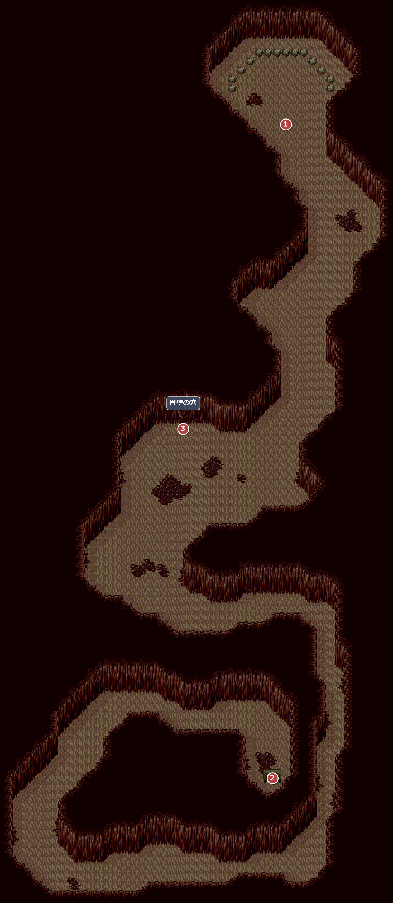
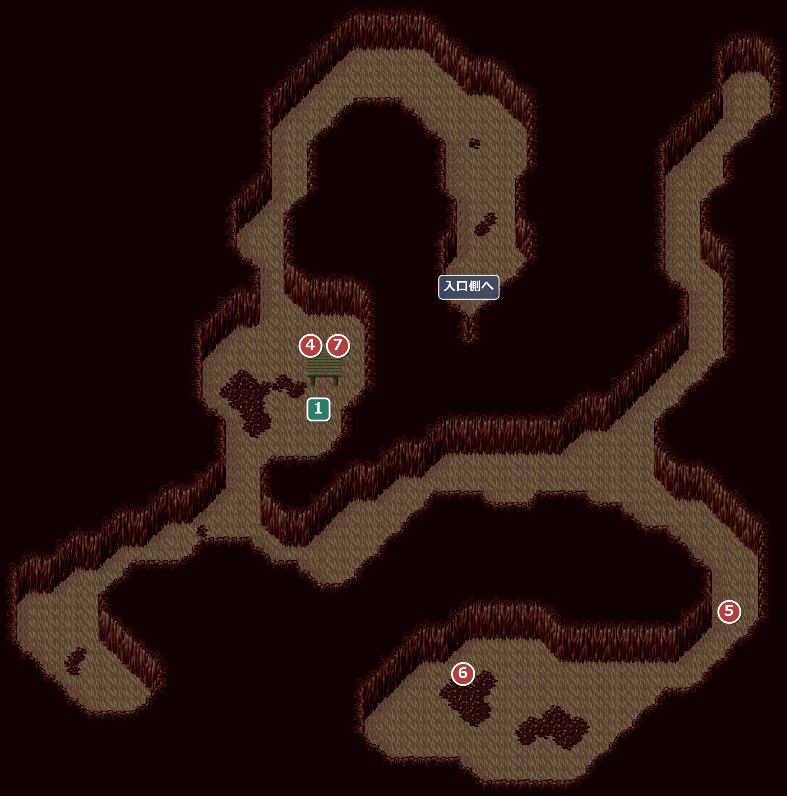

FIELD17
内臓洞窟
エンカウント率1.17%フォープキンに飲みこまれた先の、フォープキンの体の中。
名前 建物・場所1メインイベント1サブイベント
1700入口側(胃の中)

元のマップは 60×105 マス。左約10マス・右約5マス・下約3マスの何もない部分を切って載せている。
エンカウント
1歩ごとに 1.17%(平均 85.3 歩に1回)。戦闘になったときに出る組と、その確率:
| ID | 確率 | 前列 | 後列 |
|---|---|---|---|
| 44 | 44.4% | スケルトン×2 | － |
| 45 | 33.3% | スケルトン | フッター×2 |
| 46 | 22.2% | スケルトン×3 | － |
！このマップは、口から胃、腸へと続く形をしている。
イベント
1
胃の中
場所: 入口側の北の奥(X84 Y29)
フォープキンに飲みこまれ、胃の中に出る。溶かされる前に、とりあえず先へ進むことになる。
次へ南の行き止まりの宝箱へ(②)。
2
水晶玉
場所: 胃の中を南へ下った先、行き止まりの宝箱(X80-82 Y173-177)
箱の中には汚れた水晶玉が入っていて、水晶玉から声が聞こえる。声の主は、水晶玉を持ってきてほしい、胃壁の小さな穴から先へ通れる、と言う。
入手 水晶玉
水晶玉
次へ胃壁の穴へ(③)。
3
胃壁の穴
場所: 入口側の中ほど、西の壁(X60-62 Y97)
②の後でここへ来ると、胃壁の穴が見つかり、奥へ進める(②の前は何も起きない)。
次へ奥のフォーリーへ(④)。
1701奥

元のマップは 80×75 マス。左約9マス・上約3マスの何もない部分を切って載せている。
エンカウント
1歩ごとに 1.17%(平均 85.3 歩に1回)。戦闘になったときに出る組と、その確率:
| ID | 確率 | 前列 | 後列 |
|---|---|---|---|
| 47 | 33.3% | ウイングドポリプ×2 | － |
| 48 | 33.3% | ウイングドポリプ×3 | ウイングドポリプ |
| 49 | 33.3% | ウイングドポリプ×3 | フッター×3 |
イベント
4
フォーリー
場所: 奥の北西の小部屋(X74 Y67)
水晶玉を渡すと、声の主はフォープキンの父親のフォーリーで、自分も飲みこまれてしまったという。悪に染まった息子の心を元に戻すため、昔息子に歌ってあげた歌を教えてくれる。息子の心に届くよう、この先の心臓部の近くで歌ってほしいと頼まれる。
入手 子守り歌
子守り歌
次へ心臓部へ(⑤)。
5
心臓の音
場所: 奥の東の道(X142-148 Y113)
心臓の音が近づいてくる。
次へ南の広い所へ(⑥)。
6
心臓部で子守り歌戦闘
場所: 奥の南の広い所(X98 Y119-129 ほか)
鼓動の音が強くなった場所で子守り歌を使うと、苦しむ声とともにモンスターが現れ、戦闘になる。このモンスターが、フォープキンの心に巣食っていた。
戦闘ソウルイーター(前列)
次へフォーリーの所へ戻る(⑦)。
7
外へ
場所: 奥の北西の小部屋(X74 Y67)のフォーリー
フォーリーによると、体に巣食った悪魔が倒れて、呪縛の力が弱ってきている。水晶玉でフォープキンと連絡がとれ、正気に戻ったフォープキンが一行を吐き出す。
次へF15 クーテの山道のフォープキンの家へ(自動)。
サブイベント
1
休める箱
場所: 奥の北西の小部屋、フォーリーのそば(X72-74 Y77-81)
箱から出た青い霧がパーティーを包む。「休む」を選ぶと、宿屋と同じように休める(何度でも)。
没イベント情報
- 没使われないセリフが残されている … ①で、シベリンがパーティーにいるときのやり取り。シベリンは仲間にならないので出ないシベリンがパーティーにいるときシベリン「クイクイ、フォープキンさん、どっかおかしくなっちゃったの？」クイクイ「昔は優しかったんだけどなぁ…変り者だったけどね」
- 没使われないセリフが残されている … ⑥で、違う歌を使ったときのセリフ。そこへ進む処理が無いので出ない(違う歌では何も起きない)心臓部で違う歌を使ったときアイリス「ねえ、その歌は違うわよ」